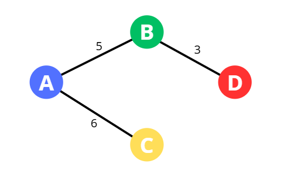

Graf adalah struktur data yang terdiri dari simpul (node/vertex) dan sisi (edge). Graf digunakan untuk merepresentasikan relasi antar objek, contohnya jaringan komputer, peta jalan, atau hubungan pertemanan. Graf memiliki banyak jenis, berikut macam-macam graf.
Graf tidak berarah adalah graf yang tidak memiliki arah pada setiap sisi. Contoh:
Graf berarah adalah graf yang memiliki arah pada setiap sisi. Contoh:
Graf berbobot adalah graf yang sisinya memiliki nilai. Contoh:

Pohon adalah graf tak berarah yang terhubung dan tidak mengandung siklus. Artinya, dalam sebuah pohon, semua simpul saling terhubung tanpa adanya jalur melingkar. Setiap pasangan simpul hanya terhubung oleh satu jalur unik.
Jika sebuah pohon memiliki n simpul, maka jumlah sisinya selalu tepat n - 1. Ini karena setiap penambahan sisi baru pada pohon akan menciptakan siklus, yang bertentangan dengan definisi pohon.
Semua pohon merupakan bagian dari graf, karena pohon adalah salah satu jenis graf khusus. Namun, tidak semua graf merupakan pohon, karena graf umum bisa saja mengandung siklus atau tidak terhubung sepenuhnya.
Berikut contoh pohon:
Minimum Spanning Tree (MST) adalah pohon merentang minimum dari sebuah graf berbobot. Artinya, MST menghubungkan semua simpul dalam graf dengan total bobot sisi serendah mungkin, tanpa membentuk siklus.
Dalam sebuah graf berbobot, bisa saja ada banyak cara menghubungkan semua simpul. Namun, MST mencari kombinasi sisi-sisi dengan bobot total terkecil yang tetap membuat semua simpul terhubung.
Ciri-ciri MST:
Beberapa algoritma yang umum digunakan untuk menemukan MST adalah algoritma Kruskal dan algoritma Prim. Di Kruskalofix, kamu dapat melihat bagaimana algoritma Kruskal bekerja secara visual untuk membangun MST.
Berikut contoh graf sebelum ditentukan MST-nya dengan total bobot 46:
Setelah MST dari graf di atas ditentukan, dapat dilihat grafnya menjadi:
Maka diperoleh total bobot MST sebesar 37, di mana efisien 9 jarak dibanding tidak mencari MST-nya
Algoritma Kruskal adalah algoritma greedy (rakus) yang digunakan untuk mencari Minimum Spanning Tree (MST) dari sebuah graf berbobot dan tidak berarah. Algoritma Kruskal adalah salah satu metode untuk menemukan Minimum Spanning Tree (MST) dari sebuah graf berbobot. Prinsip kerja Kruskal sangat sederhana: selalu pilih sisi dengan bobot terkecil yang belum membentuk siklus, sampai semua simpul terhubung.
Berikut langkah-langkah utama dari algoritma Kruskal:
Lihat contoh Graf Berbobot di mana kita akan mencari MST dari graf tersebut.

Setelah itu hitung semua bobot (6 + 5 + 3 = 14). Maka diperoleh total bobot MST-nya sebesar 14.
Saat algoritma Kruskal memilih sisi dengan bobot terkecil, kita harus berhati-hati agar tidak membentuk siklus. Siklus adalah kondisi di mana kamu bisa kembali ke titik awal hanya dengan mengikuti sisi-sisi yang sudah dipilih ini tidak boleh terjadi dalam pohon merentang minimum (MST).
Sebagai contoh sederhana, bayangkan kamu ingin menghubungkan beberapa komputer dalam jaringan, tetapi ingin memakai kabel sesedikit dan sehemat mungkin. Kruskal akan memilih kabel-kabel terpendek dulu, dan memastikan semua komputer terhubung tanpa ada kabel yang dipasang dua kali ke jalur yang sama.
Di Kruskalofix, kamu bisa melihat proses ini divisualisasikan secara langsung. Setiap sisi yang dipilih akan ditandai, dan kamu bisa mengikuti langkah demi langkah bagaimana pohon merentang minimum terbentuk.